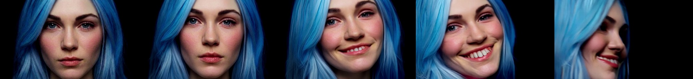
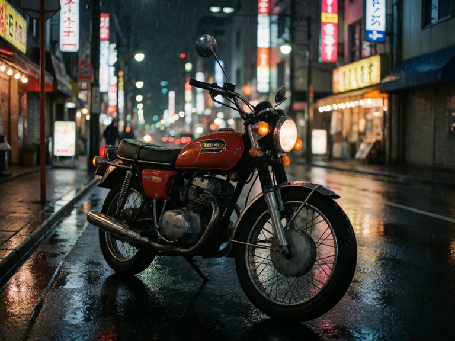
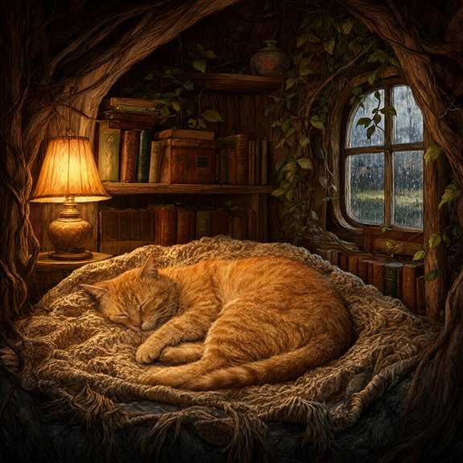
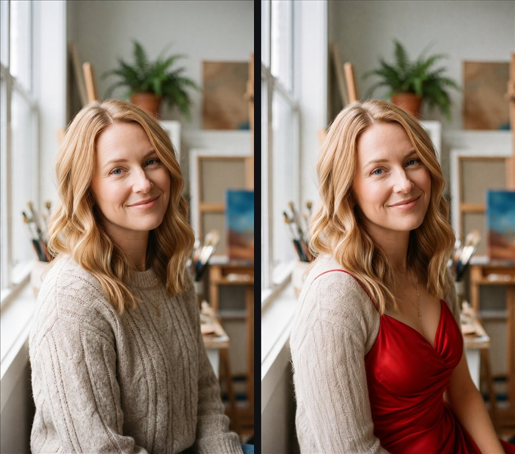
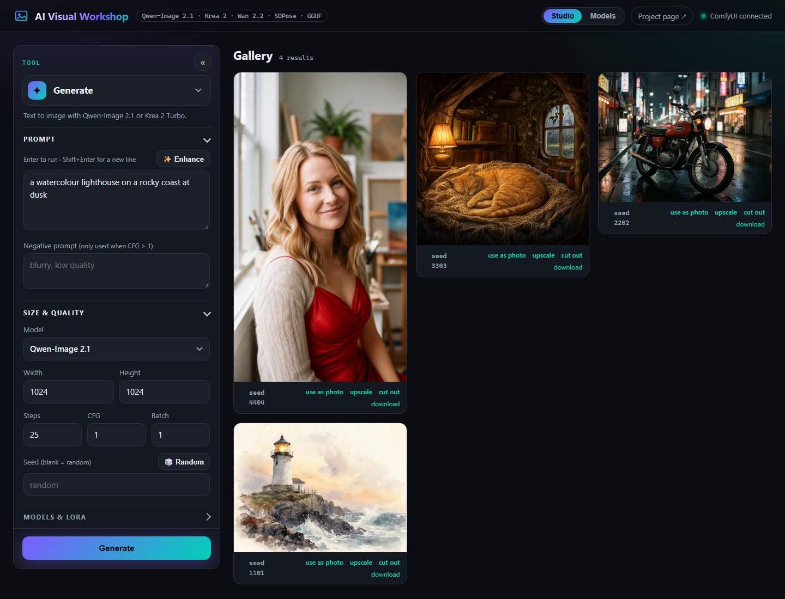
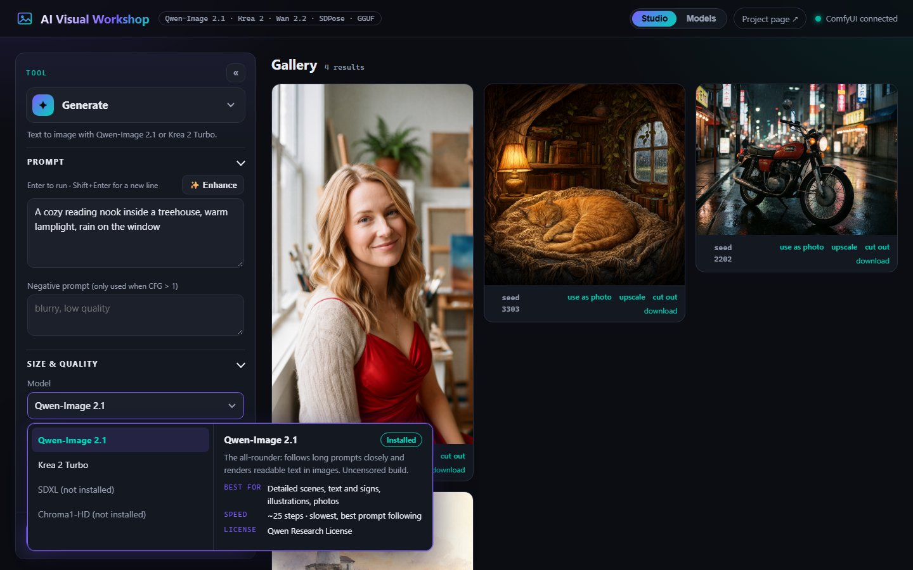

Ten tools, one panel
Text to image
Qwen-Image 2.1, Krea 2 Turbo in 8 steps, SDXL (RealVisXL Lightning) in 6, or Chroma1-HD. Size, steps, CFG, batch, and a seed you can roll 🎲 or reuse from any result.
Describe the change
“Make the dress red.” Qwen-Image 2.1 edits natively, keeping the photo's shape and everything you didn't mention.
Repaint one area
Paint a mask and regenerate only that part. Everything outside it is kept pixel for pixel.
Past the borders
Extend to 16:9, 1:1 or “zoom out 2×”. The model invents the surroundings; the original stays exact.
Copy a pose
SDPose reads the body, hands and face in a photo; Qwen-Image draws something new in exactly that pose.
Cut out or replace
BiRefNet cuts the subject out as a transparent PNG, or keeps it and paints a new background you describe. Local, no cloud.
Change the light
“Golden hour from the left.” Only the lighting changes; people, pose and composition stay.
Smooth, cut out
RIFE adds in-between frames (16 → 32 fps), or remove a video's background onto a green screen.
2× or 4×
4x-UltraSharp V2 adds real detail. One click under any result, or its own tool for any photo.
Bring it to life
Wan 2.2: animate a photo or make a video from a prompt alone. 2–5 s at 24 fps, sized to the photo. Plus a face-focused 14B model (test).
Download in the app
See what's installed and download the rest, resumable over parallel connections, without leaving the page.
Enhance, LoRA, queue
✨ rewrites a prompt with a local LLM, LoRAs stack on any tool, and every job gets a card with live progress and Cancel.

Made with it
Straight out of the app on an RTX 2060 (6 GB), no retouching.



Models


| Model | Does | Default file | License |
|---|---|---|---|
| Qwen-Image 2.1 | Generate, edit, inpaint, uncrop | qwen-image-2.1-UC-Q4_K_M.gguf (4.6 GB) | Qwen Research |
| Krea 2 Turbo (optional) | Generate, in 8 steps | krea2_turbo_bf16-Q4_0.gguf (8.3 GB) | Krea 2 Community |
| RealVisXL V5 Lightning | Generate (SDXL, photoreal, 6 steps) | RealVisXL_V5.0_Lightning_fp16.safetensors (6.9 GB) | OpenRAIL++ |
| Wan 2.2 TI2V-5B (optional) | Video: text or photo to video | Wan2.2-TI2V-5B-Q5_K_M.gguf (3.8 GB) | Apache 2.0 |
| Wan 2.2 I2V-A14B, faces (test) | Video: photo to video, faces and identity | LightX2V 4-step, high + low noise Q3_K_M (14.4 GB) | Apache 2.0 |
| SDPose whole-body | Pose | sdpose_wholebody_fp16.safetensors (1.9 GB) | MIT |
| 4x-UltraSharp V2 | Upscale | 4x-UltraSharpV2.safetensors (0.14 GB) | CC BY-NC-SA 4.0 |
| Chroma1-HD (optional) | Generate, uncensored, Flux-based | Chroma1-HD-Q4_K_M.gguf (5.6 GB) | Apache 2.0 |
Tested on an RTX 2060 (6 GB) with 64 GB of RAM. Set the Windows page file to at least 32 GB.
How it works
browser → Flask (app.py) → HTTP + websocket → ComfyUI → Qwen-Image 2.1 / Krea 2 / SDXL / Wan 2.2 / SDPose
↓
Ollama (✨ Enhance, optional)
The Flask server doesn't run the models: it patches the API-format ComfyUI workflow for the tab with your prompt and settings, queues it, relays live sampler progress, and saves the results to output/. So the UI can live on a Raspberry Pi while a GPU PC does the work.
Run it
- Install ComfyUI and the leejet ComfyUI-GGUF nodes.
- Point ComfyUI at this repo's
models/withextra_model_paths.yaml, then download the models from the app's Models page (or by hand; the README lists every file). - Run
run.bat(orrun.ps1) and openhttp://127.0.0.1:5000. It starts ComfyUI in its own window if it isn't running yet; withrun.sh, start ComfyUI yourself first.
$ run.bat $ python generate_video.py "she turns toward the camera and smiles" --image photo.png
Or script it
$ curl -X POST http://127.0.0.1:5000/api/video \
-F image=@photo.png -F "prompt=she turns toward the camera and smiles" -F frames=81